Misión
Investigar, gestionar y promover el patrimonio cultural y natural de Colombia con rigor científico, en diálogo con las comunidades que lo habitan y lo cuidan.
Arqueología · Patrimonio · Ambiente
Más de dos décadas estudiando el patrimonio arqueológico, social y ambiental de nuestro territorio.
01 — Quiénes somos
La Corporación para Investigaciones y Estudios en Sociedad, Patrimonio, Ambiente e Historia (SIPAH) es una entidad sin ánimo de lucro dedicada a la investigación, gestión y promoción de los valores socio-culturales y del entorno natural.
Su equipo está conformado por profesionales en antropología, arqueología, licenciaturas, ciencias sociales e historia, arquitectura, sistemas y diseño gráfico, entre otras áreas. Lo acompaña un equipo de Vigías del Patrimonio en formación, con perfiles en ingeniería ambiental, gestión cultural, literatura, bacteriología, sistemas y lúdica y recreación.
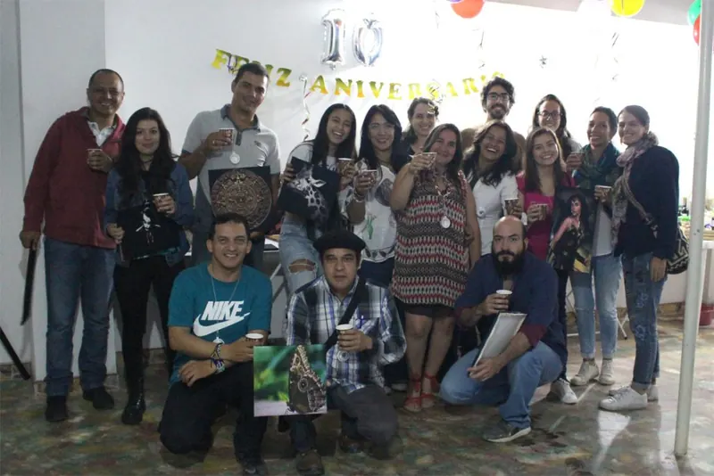
Misión
Investigar, gestionar y promover el patrimonio cultural y natural de Colombia con rigor científico, en diálogo con las comunidades que lo habitan y lo cuidan.
Visión
Ser un referente nacional en arqueología e investigación patrimonial, reconocido por convertir cada estudio en conocimiento público y memoria compartida.
02 — Servicios
En Colombia, los proyectos que requieren licencia ambiental deben contar con un Programa de Arqueología Preventiva aprobado por el ICANH. Lo formulamos y lo ejecutamos: del diagnóstico inicial al informe final, con laboratorio propio en Itagüí.
Evaluación del potencial en contextos rurales y urbanos antes de intervenir el suelo.
Formulación y ejecución del programa exigido para obras públicas y privadas.
Medidas de protección para los sitios y materiales que aparecen durante la obra.
Sondeos, acompañamiento de maquinaria y rescate con control estratigráfico.
Modelos del terreno para documentar sitios y áreas de obra.
Reconstrucción de entornos antiguos y asesoría en dataciones.
Análisis lítico, cerámico, de suelos, óseo, de metales y de fauna.
Penetrometría, geoeléctrica y geoacústica, sin excavar.
Réplicas para estudio, museografía y divulgación.
Intervención, registro e inventario de bienes muebles.
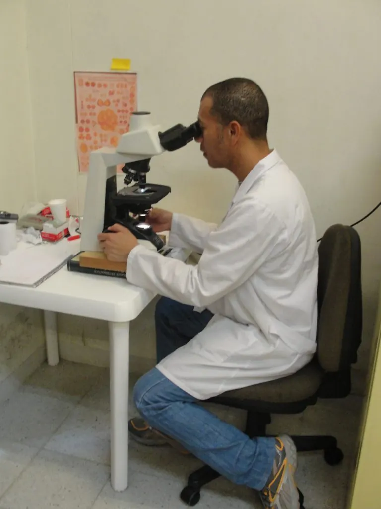
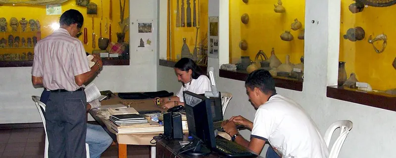
Estudios de impacto ambiental · Diagnósticos socioculturales · Inventarios patrimoniales · Etnografía y etnohistoria · Historia documental · Patrimonio arquitectónico · Historias empresariales · Formación y turismo cultural
03 — Método
El mismo equipo acompaña la obra de principio a fin, y cada fase deja un registro que el ICANH puede revisar.
Revisamos fuentes, cartografía y normativa para estimar el potencial del área.
Sondeos y recorridos sistemáticos para ubicar evidencias en campo.
Rescate controlado y estudio de materiales en laboratorio.
Entregamos el informe técnico y devolvemos el conocimiento a la comunidad.
04 — Hallazgos
Hallazgos documentados por SIPAH en obras de Medellín e Itagüí, recogidos por la prensa regional y nacional.
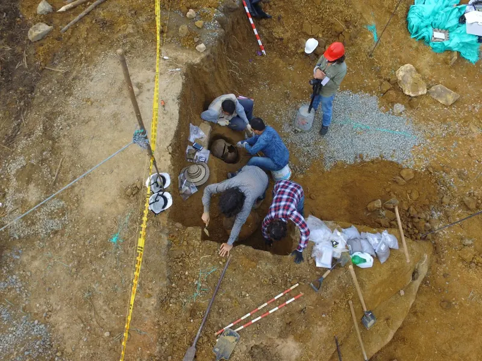
Parque de las Luces, Itagüí · 2016Tumbas de hasta dos metros de profundidad; cada una contenía dos vasijas.
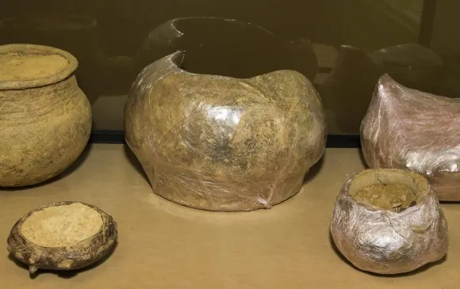
Sede de Telemedellín, El Poblado · 201524 vasijas y más de 10.000 fragmentos excavados con supervisión del ICANH.
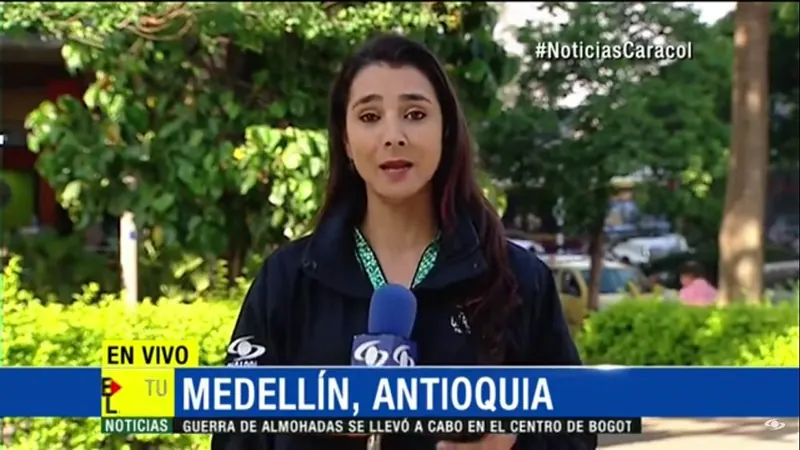
Cubrimiento de Noticias CaracolApareció tras el movimiento de tierra de una retroexcavadora y será objeto de estudio.
Una semblanza inédita del arte rupestre del municipio, por el director de SIPAH.
Conocer los petroglifosMapa de hallazgos
Lugares del Valle de Aburrá donde SIPAH ha excavado, registrado o divulgado patrimonio arqueológico.
Plano esquemático; ubicaciones aproximadas.
Telemedellín, 2015 — en palabras del arqueólogo
«Un hallazgo tan complejo como este, nos permite interpretar que en este sitio habitó un grupo humano de nativos, quizás numeroso y con prácticas agroalfareras que son indicativas de sedentarismo, y esta zona donde hoy funciona Telemedellín fue el asentamiento para algunos de ellos […]»
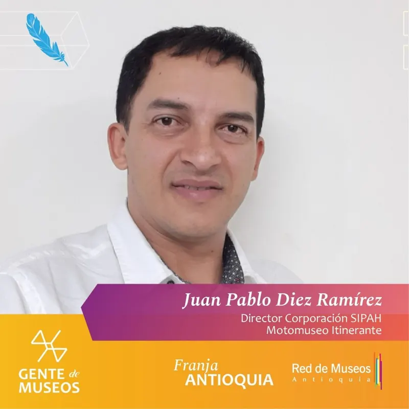
Juan Pablo Díez RamírezArqueólogo · director de la Corporación SIPAH
Fuente: Alcaldía de Medellín, 202405 — Historia
Desliza o arrastra para recorrerlos
2015
Las obras del canal del parque Gabriel García Márquez revelan un asentamiento de más de 2.500 años. SIPAH excava y conserva 24 vasijas y más de 10.000 fragmentos, con supervisión del ICANH.
Fuente: Alcaldía de Medellín
2016
El 16 de mayo aparece una tumba con dos vasijas del estilo Marrón Inciso. En las semanas siguientes se identifican tres tumbas de más de 2.000 años.
Fuente: El Colombiano · AFP
2017
En la misma obra se documentan seis tumbas indígenas: tres de pozo directo y tres de cajón en tierra.
Fuente: El Colombiano
2018
El equipo de SIPAH y los Vigías del Patrimonio de Itagüí trabajan juntos en investigación y divulgación.
Fuente: Archivo SIPAH
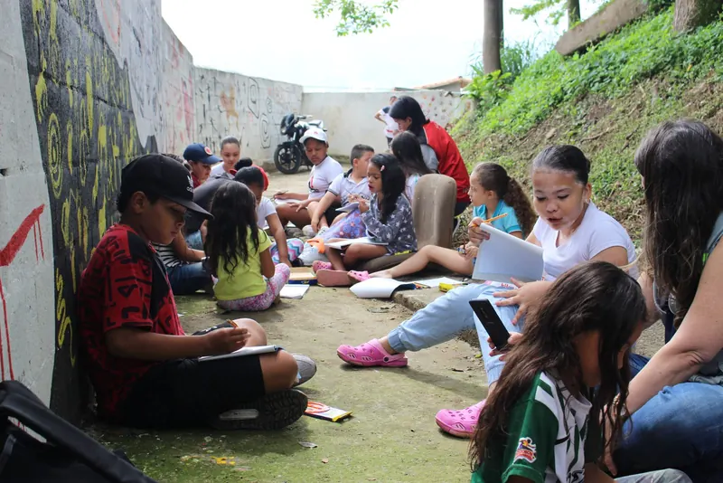
2019
Siembra con la comunidad del barrio El Rosario en el parque de los Petroglifos, el 24 de octubre.
Fuente: corporacionsipah.org
2021
Ronda Latinoamericana de museos el 19 de mayo y conversatorios del Mes del Patrimonio en septiembre.
Fuente: Archivo SIPAH
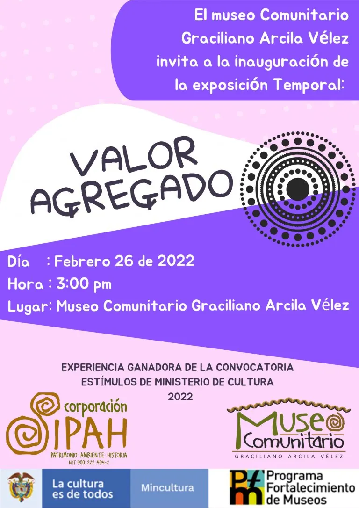
2022
Exposición temporal en el Museo Comunitario G.A.V., inaugurada el 26 de febrero. Ganadora de la convocatoria de estímulos del Ministerio de Cultura.
Fuente: Archivo SIPAH
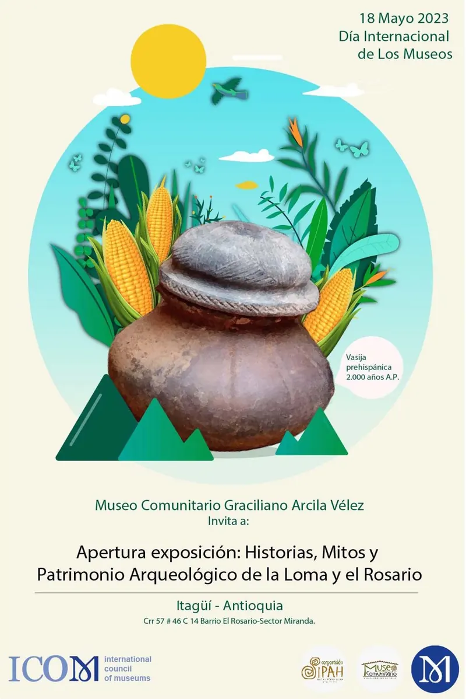
2023
El 18 de mayo abre la exposición «Historias, mitos y patrimonio arqueológico de La Loma y El Rosario».
Fuente: Archivo SIPAH
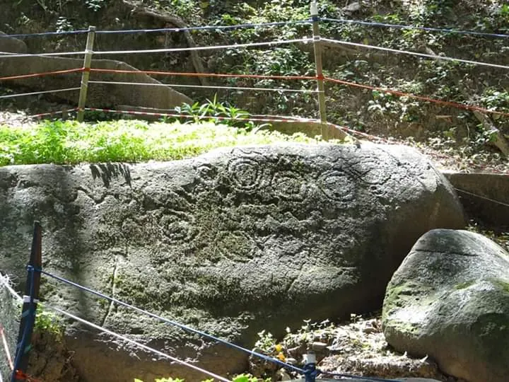
06 — Arte rupestre
En El Rosario, el barrio de Itagüí donde está nuestra sede, el parque de los Petroglifos conserva rocas grabadas por los antiguos pobladores del valle.
Juan Pablo Díez Ramírez escribió sobre ellas en «Petroglifos de Itagüí: una historia por contar». Alrededor de las rocas organizamos los Círculos de Palabra («Tejiendo el patrimonio desde los petroglifos»), la siembra de Familias Verdes con los vecinos de El Rosario y la exposición «Los Petroglifos: una historia tallada en roca» del Museo Comunitario.
Alcaldía de Medellín
Alcaldía de Medellín
El Colombiano, 2017
Publicaciones SIPAH
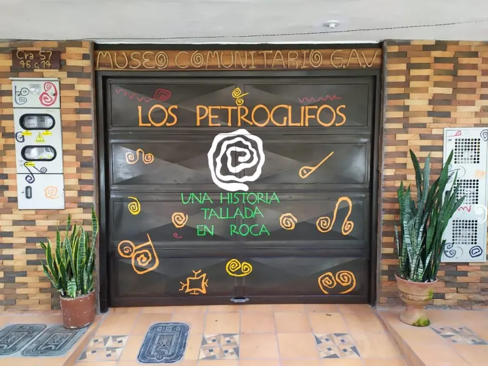
07 — Museo
Lleva el nombre del antropólogo antioqueño Graciliano Arcila Vélez. Reúne colecciones arqueológicas, exposiciones temporales y programas para escuelas y vecinos de Itagüí.
Viernes y sábado
9:00 a. m. – 4:30 p. m.
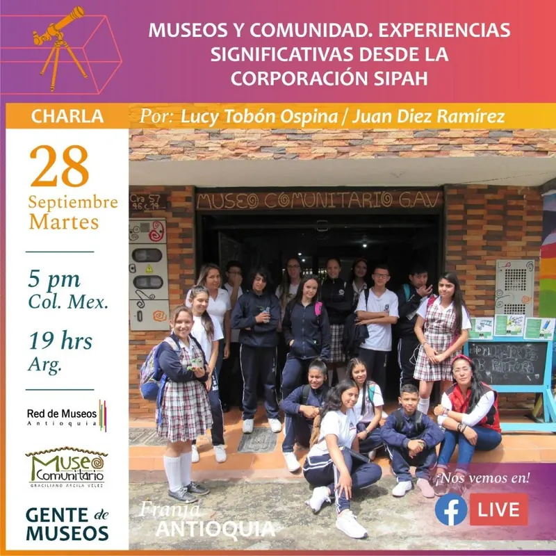
Charlas y recorridos en línea, como «Museos y comunidad: experiencias significativas desde la Corporación SIPAH».
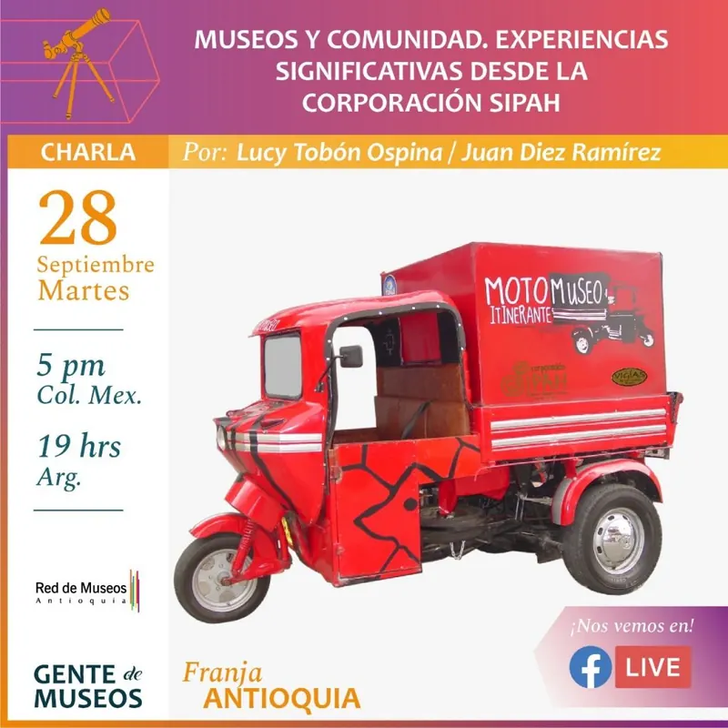
Un triciclo convertido en vitrina que lleva piezas y relatos a barrios, colegios y eventos.
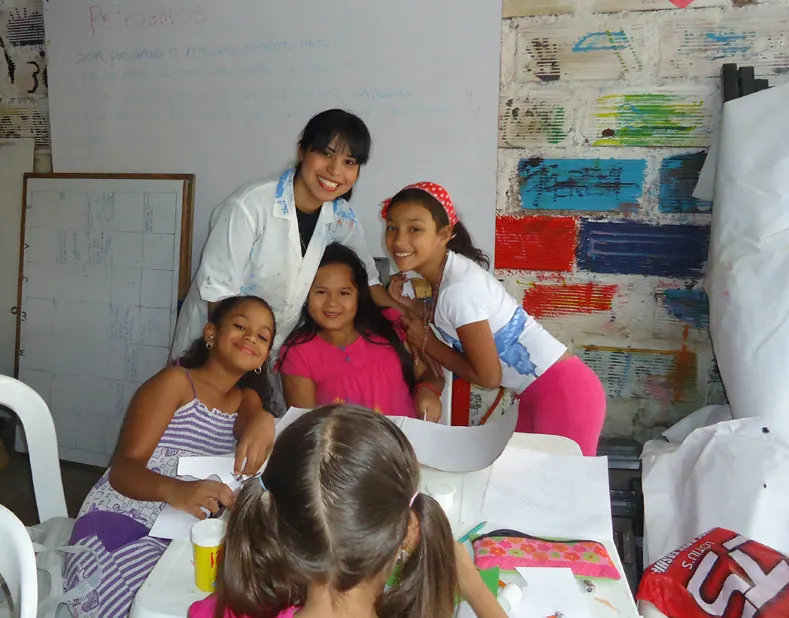
Talleres y juegos para que niñas y niños se acerquen a la historia de su barrio.
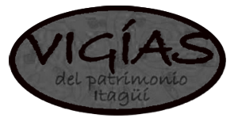
08 — Vigías del Patrimonio
Un grupo voluntario en formación, con perfiles en ingeniería ambiental, gestión cultural, literatura, bacteriología, sistemas y lúdica y recreación.
09 — Equipo
32 personas. Antropólogos y arqueólogos —la mayoría egresados de la Universidad de Antioquia—, un ingeniero ambiental, un biólogo, un museógrafo, un maestro en artes plásticas dedicado a la alfarería ancestral y el equipo técnico y operativo que sostiene cada obra.
Fuente: corporacionsipah.org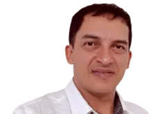
Director General
Antropólogo / Arqueólogo · Universidad de Antioquia
Vicepresidente
Ingeniero Ambiental · Universidad de Antioquia
Directora del Museo Comunitario G.A.V.
Trabajadora Social · Universidad de Antioquia
Juan David Espinosa Wolff
Investigador
Estudiante de Antropología · Universidad de Antioquia
Andrés Godoy Toro
Investigador
Antropólogo / Arqueólogo · Universidad de Antioquia
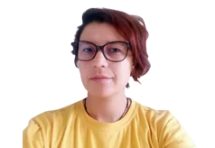
Adriana María Franco Henao
Investigadora
Antropóloga / Arqueóloga · Universidad de Antioquia
Carlos Albeiro Monsalve Marín
Investigador
Biólogo · Universidad de Antioquia
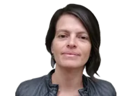
Mónica Cecilia Bran Pérez
Investigadora
Antropóloga / Arqueóloga · Universidad de Antioquia
Fernando Bustamante Clavijo
Investigador
Antropólogo / Arqueólogo · Universidad de Antioquia
Carolina Imbol Rúa
Investigadora
Antropóloga / Arqueóloga · Universidad de Antioquia
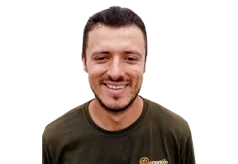
Luis Alfredo Giraldo Giraldo
Investigador
Antropólogo / Arqueólogo · Universidad de Antioquia
Yadira Rosa Vidal Villadiego
Investigadora
Antropóloga / Arqueóloga · Universidad de Antioquia
Beatriz Eliana López Ospina
Investigadora
Antropóloga / Arqueóloga · Universidad de Antioquia
Diego Mauricio Castañeda Álvarez
Investigador
Antropólogo / Arqueólogo · Universidad de Antioquia
Clara Eugenia Arango Campuzano
Investigadora
Antropóloga / Arqueóloga · Universidad de Antioquia
Víctor Antonio Martínez Quiroz
Investigador
Antropólogo / Arqueólogo · Universidad de Antioquia
Dalia Vargas Flórez
Investigadora
Antropóloga / Arqueóloga · Universidad de Antioquia
Andrés Augusto Gutiérrez Restrepo
Investigador
Antropólogo / Arqueólogo · Universidad de Antioquia
María Cristina Orozco Ríos
Investigadora
Antropóloga / Arqueóloga · Universidad de Antioquia
Sucel Correa Carmona
Investigadora
Antropóloga / Arqueóloga · Universidad de Antioquia
Daniela López Quiroz
Investigadora
Antropóloga / Arqueóloga · Universidad de Antioquia
Jhon Darío Quiroz Erazo
Investigador
Antropólogo · Universidad de Antioquia
Yuly Andrea Moncada Restrepo
Investigadora
Antropóloga / Arqueóloga · Universidad de Antioquia
Carlos Andrés De Santis González
Museógrafo
Diseñador Industrial · Universidad Pontificia Bolivariana
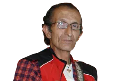
Jorge Hernán Prieto
Alfarería ancestral
Maestro en Artes Plásticas
María Fernanda Zapata Osorio
Profesional SIG
Estudiante de Arquitectura · UPB
Eider Andrés Montoya David
Prevención de riesgos laborales
Ingeniero en Higiene y Seguridad Ocupacional · Politécnico Colombiano Jaime Isaza Cadavid
Jaime Alonso Estrada Ossa
Contador
Universidad Cooperativa de Colombia
Valentina Díez López
Auxiliar operativa
Haminson Rivas Chaverra
Auxiliar operativo
Ricardo Muriel Hernández
Auxiliar operativo
Yonatan Andrés Herrera Muñoz
Auxiliar operativo
10 — Publicaciones
Libros de investigación sobre Arboletes, Amalfi y la vida de Graciliano Arcila Vélez.
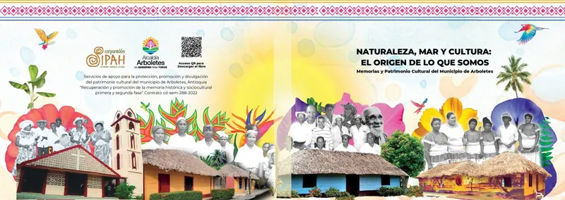
Memorias y patrimonio cultural del municipio de Arboletes11 — Prensa
Estuvimos realizando una actividad de siembra con la comunidad del barrio El Rosario en el parque de los Petroglifos…
Leer en corporacionsipah.orgUna tumba con dos vasijas en cerámica hechas hace unos 2.000 años fue encontrada por arqueólogos…
Arqueólogos colombianos identificaron tres tumbas de más de 2.000 años de antigüedad; el primer hallazgo fue en Itagüí.
Las piezas halladas tendrían entre 2.500 y 3.000 años de antigüedad.
El antropólogo y arqueólogo Juan Pablo Díez Ramírez, director de la Corporación SIPAH, hace una inédita semblanza…
12 — Archivo
Excavaciones, petroglifos, el museo y el trabajo con la comunidad de El Rosario.
13 — Preguntas frecuentes
Si tu duda no está aquí, escríbenos: te respondemos en 2 días hábiles.
Por ley, los proyectos que requieren licencia ambiental deben contar con un Programa de Arqueología Preventiva aprobado por el ICANH antes de intervenir el suelo (Ley 1185 de 2008 y Decreto 138 de 2019). En otros casos puede exigirlo el plan de ordenamiento territorial o el plan de manejo de una zona de interés arqueológico. Si no tienes claro tu caso, lo revisamos contigo.
Hay que detener la intervención en ese punto y dar aviso al ICANH, que define cómo continuar. Con un programa de arqueología preventiva en marcha, el equipo arqueológico ya está en la obra para registrar y rescatar el hallazgo con control estratigráfico, y la afectación al cronograma es menor.
Depende del área, del potencial arqueológico del terreno y de la fase del proyecto: no es lo mismo un diagnóstico que un rescate. En la cotización te entregamos un cronograma por fases ajustado a tu obra.
El informe técnico para radicar ante el ICANH, con el registro de campo, la cartografía, los análisis de laboratorio de los materiales y las medidas de manejo. También acompañamos la divulgación del conocimiento con la comunidad cuando el proyecto lo requiere.
Sí. En nuestra sede de Itagüí analizamos material lítico, cerámico, óseo, de suelos, metales y fauna, y hacemos registro, inventario, conservación y escaneo 3D de piezas.
Responde las tres preguntas del asistente de esta página o escríbenos con la ubicación y el alcance de tu proyecto. Respondemos en un plazo de 2 días hábiles.
Si el proyecto requiere licencia ambiental, necesita un Programa de Arqueología Preventiva aprobado por el ICANH. Responde tres preguntas y te decimos qué necesita tu obra.
14 — Contacto